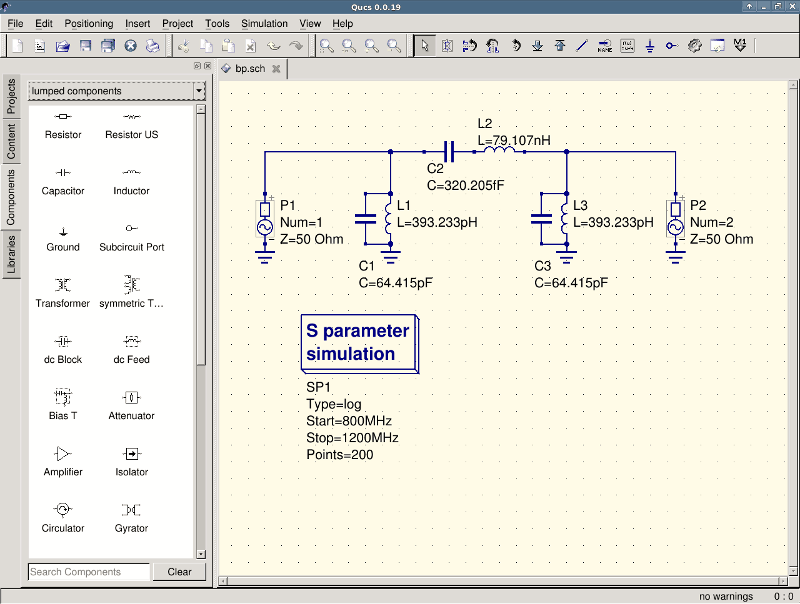
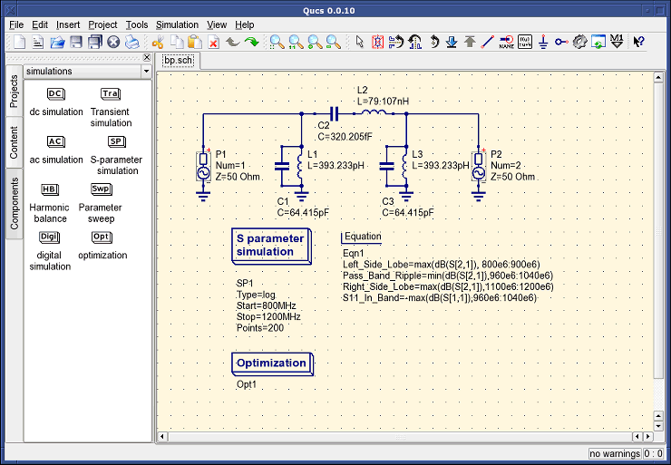
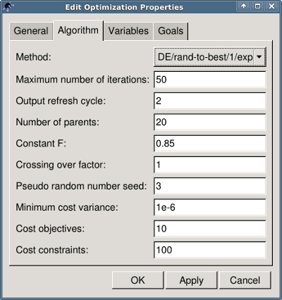
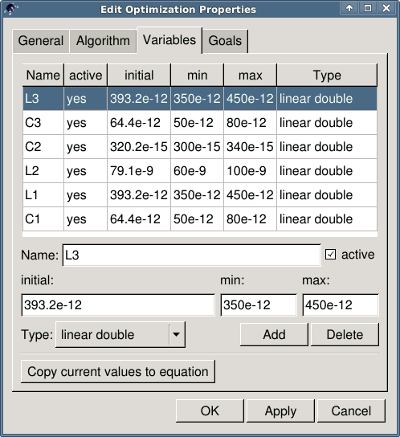
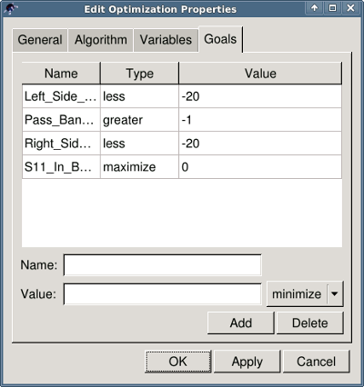
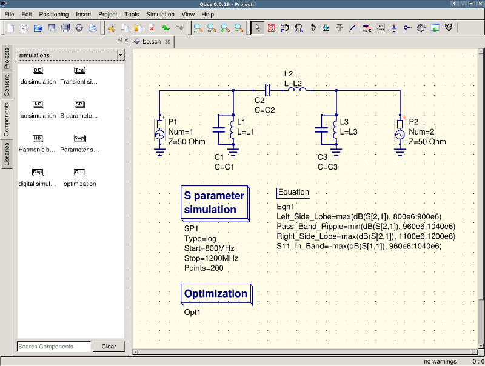
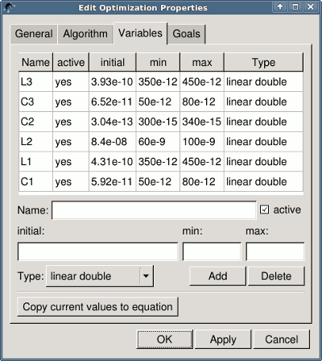

- Qucs -
Quite Universal Circuit Simulator
Getting Started with
Optimization
For circuit optimization, Qucs uses the ASCO tool
(http://asco.sourceforge.net/). A
brief description on how to prepare your schematic, execute and interprete the
results is given below. Before using this functionality, ASCO must be installed
on the computer.
Optimization of a circuit is nothing more than the minimization of a cost
function. It can either be the delay or the rise time of a digital circuit, or
the power or gain of an analog circuit. Another possibility is defining the
optimization problem as a composition of functions, leading in this case to the
definition of a figure-of-merit.
To setup a netlist for optimization two things must be added to the already
existing netlist: insert equation(s) and the optimization component block. Take
the schematic from Figure 1 and change it until you have the resulting schematic
given in Figure 2.

Figure 1 - Initial schematic.

Figure 2 - Prepared schematic.
Now, open the optimization component and select the optimization tab. From the
existing parameters, special attention should be paid to 'Maximum number of
iterations', 'Constant F' and 'Crossing over factor'. Over- or underestimation
can lead to a premature convergence of the optimizer to a local minimum or, a very long
optimization time.

Figure 3 - Optimization dialog, algorithm options.
In the Variables tab, defining which circuit elements will be chosen from the
allowed range, as shown in Figure 4. The variable names correspond to the
identifiers placed into properties of components and not the components'
names.

Figure 4 - Optimization dialog, variables options.
Finally, go to Goals where the optimization objective (maximize, minimize) and
constraints (less, greater, equal) are defined. ASCO then automatically combines
them into a single cost function, that is then minimized.

Figure 5 - Optimization dialog, goals options.
The next step is to change the schematic, and define which circuit elements are
to be optimized. The resulting schematic is show in Figure 6.

Figure 6 - New Qucs main window.
The last step is to run the optimization, i.e. the simulation by pressing F2.
Once finished, which takes a few
seconds on a modern computer, the best simulation results is shown in the
graphical waveform viewer.

Figure 7 - Qucs results window.
The best found circuit sizes can be found in the optimization dialog, in the
Variables tab. They are now the initial values for each one of introduced
variables (Figure 8).

Figure 8 - The best found circuit sizes.
By clicking the "Copy current values to equation" button, an equation component defining all the optimization variables with the values of the "initial" column will be copied to the clipboard and can be pasted to the schematic after closing the optimization dialog.
The resulting schematic will be as shown in the next figure.

Figure 9 - Schematic with optimized values.
in case you need to do further modifications to the schematic, the optimization component can now be disabled and the optimized values from the pasted equation will be used.
You can change the number of figures shown for the optimized values in the optimization dialog by right-clicking on the "initial" table header and selecting the "Set precision" menu, as shown in the following figure.

Figure 10 - Changing the displayed variables precision.
back to the top